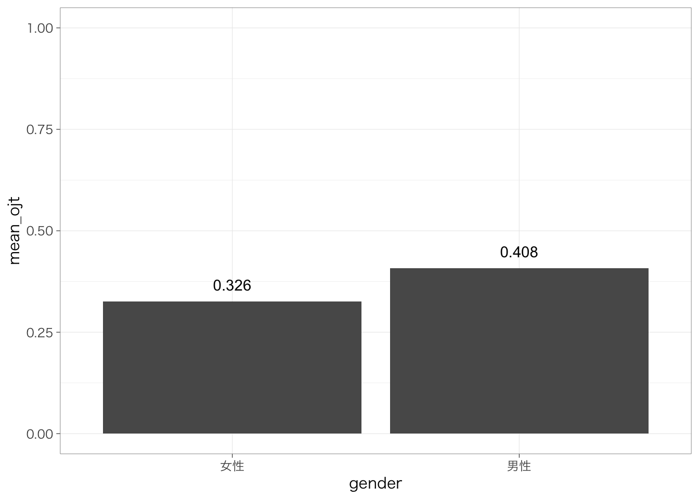
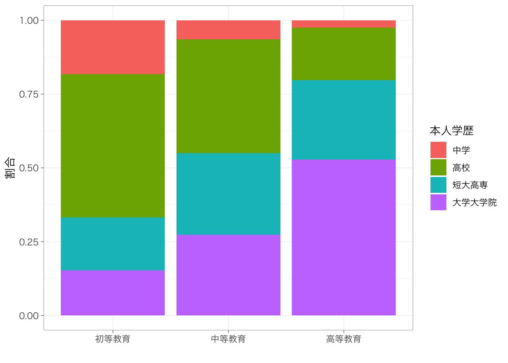
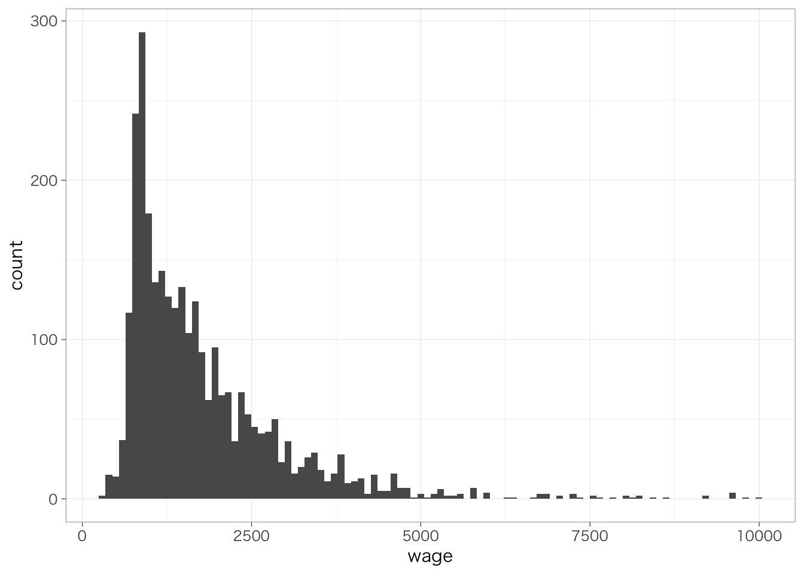
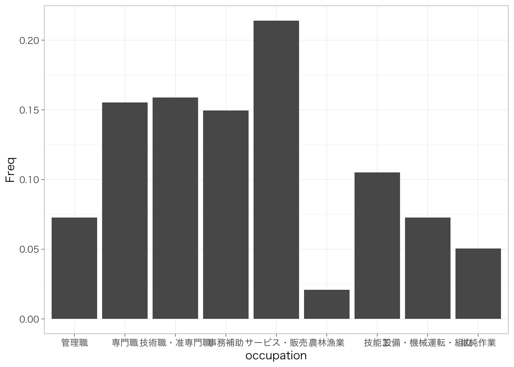
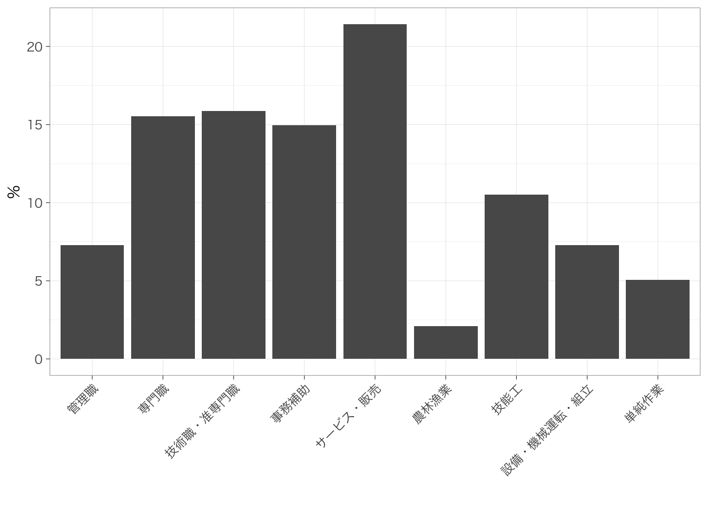

Chapter 3 1変数の集計
以下の記述はすでにtidyverseパッケージを読み込んでおり、また読み込んだデータをpiaacというデータフレームに入れていることを前提とします。データフレームの名前はpiaacである必要はありません。以下のようなコードを実行していると思います。
library(tidyverse)
piaac <- read_csv("data/piaac.csv")また、Macでggplot2パッケージを使用し、グラフ中に日本語を使用する場合には、library(tidyverse)またはlibrary(ggplot2)を実行したうえで、たとえば以下のようなコードをあらかじめ実行しておく必要があります。
theme_set(theme_grey(base_family = "HiraginoSans-W3"))この資料で使用しているグラフについては以下のようにthemeを設定しています。
theme_set(theme_bw(
base_family = "HiraginoSans-W3",
base_size = 11,
base_rect_size = 0.2,
base_line_size = 0.2
))Windowsユーザの方は上記コードからbase_family =の行を除いたこちらのコードで同じような雰囲気になります：
theme_set(theme_bw(
base_size = 11,
base_rect_size = 0.2,
base_line_size = 0.2
))3.1 連続変数を集計する
piaac %>%
summarize(mean = mean(wage))## # A tibble: 1 x 1
## mean
## <dbl>
## 1 NANAになってしまった。集計する変数（この場合はwage）にNAが含まれている場合には、平均値が計算できず、NAとなってしまう。NAを除いて平均値を計算するときには、あらかじめwageがNAの行を除外しておくとよい。
piaac %>%
filter(is.na(wage) == FALSE) %>%
summarize(mean = mean(wage))## # A tibble: 1 x 1
## mean
## <dbl>
## 1 1778.平均値だけでなく、いろいろな統計量を計算できる。よく用いるものは以下のとおり。
| 関数 | 意味 |
|---|---|
mean(x) |
平均値 |
sd(x) |
標準偏差 |
max(x) |
最大値 |
min(x) |
最小値 |
quantile(x, 0.5) |
分位数。0.5とした場合には50パーセンタイル点（中央値）を計算する。0（最小）から1（最大）まで任意の点を指定できる。 |
n() |
行数を数える。 |
全部集計してみるとたとえば以下のような感じになる。
piaac %>%
filter(is.na(wage) == FALSE) %>%
summarize(mean = mean(wage),
sd = sd(wage),
max = max(wage),
min = min(wage),
p25 = quantile(wage, 0.25),
p50 = quantile(wage, 0.5),
p75 = quantile(wage, 0.75),
n = n())## # A tibble: 1 x 8
## mean sd max min p25 p50 p75 n
## <dbl> <dbl> <dbl> <dbl> <dbl> <dbl> <dbl> <int>
## 1 1778. 1206. 10000 300 933. 1441. 2198. 2882最小値、第1四分位点、中央値、平均値、第3四分位点、最大値をまとめて表示したい場合には、これらを計算したい変数だけをselect()で抽出したうえで、summary()関数を使うとできる。
piaac %>%
select(wage) %>%
summary()## wage
## Min. : 300
## 1st Qu.: 933
## Median : 1441
## Mean : 1778
## 3rd Qu.: 2198
## Max. :10000
## NA's :5373.2 連続変数の分布の可視化：ヒストグラム
piaac %>%
ggplot(aes(x = wage)) +
geom_histogram()## `stat_bin()` using `bins = 30`. Pick better value with `binwidth`.
piaac %>%
ggplot(aes(x = wage)) +
geom_histogram(bins = 10)
piaac %>%
ggplot(aes(x = wage)) +
geom_histogram(bins = 100)
3.3 カテゴリ変数の集計
カテゴリ変数の場合は平均値や標準偏差のような要約統計量を計算することはできない（意味がない）。最も基本的な集計は、各カテゴリにそれぞれ何人いるのかを確認することだ。with(table())を使うことで各カテゴリの人数（行数）をみることができる。
piaac %>%
with(table(occupation))## occupation
## 管理職 専門職 技術職・准専門職
## 249 531 543
## 事務補助 サービス・販売 農林漁業
## 511 732 72
## 技能工 設備・機械運転・組立 単純作業
## 359 249 173人数だけでなく、各職業にどれくらいの割合の人が含まれているのかも重要だ。先ほどのコマンドにprop.table()を加えることで、各カテゴリに含まれる人が全体に占める割合を計算できる。
piaac %>%
with(table(occupation)) %>%
prop.table()## occupation
## 管理職 専門職 技術職・准専門職
## 0.07282831 0.15530857 0.15881837
## 事務補助 サービス・販売 農林漁業
## 0.14945891 0.21409769 0.02105879
## 技能工 設備・機械運転・組立 単純作業
## 0.10500146 0.07282831 0.05059959この値をすべて足すと1になる。
小数点以下が多すぎて見にくいので、小数点第3位で丸めよう。先ほどのコマンドにround(digits = 3)を加えると、小数点第3位で丸めることができる。digitsのところの値が、小数点第○位の○の値に対応する。
piaac %>%
with(table(occupation)) %>%
prop.table() %>%
round(3)## occupation
## 管理職 専門職 技術職・准専門職
## 0.073 0.155 0.159
## 事務補助 サービス・販売 農林漁業
## 0.149 0.214 0.021
## 技能工 設備・機械運転・組立 単純作業
## 0.105 0.073 0.051この値はすべて足すと1になる。なので、この値を100倍すると単位を百分率（%）に直すことができる。
piaac %>%
with(table(occupation)) %>%
prop.table() %>%
round(3) * 100## occupation
## 管理職 専門職 技術職・准専門職
## 7.3 15.5 15.9
## 事務補助 サービス・販売 農林漁業
## 14.9 21.4 2.1
## 技能工 設備・機械運転・組立 単純作業
## 10.5 7.3 5.1## カテゴリ変数の分布の可視化：棒グラフ
こうして集計した値を棒グラフにして表すと見やすいかもしれない。
piaac %>%
with(table(occupation)) %>%
prop.table() %>%
as.data.frame() %>%
ggplot(aes(x = occupation, y = Freq)) +
geom_col()
piaac %>%
with(table(occupation)) %>%
prop.table() %>%
as.data.frame() %>%
ggplot(aes(x = occupation, y = Freq * 100)) +
geom_col() +
labs(x = "", y = "%") +
theme(axis.text.x = element_text(angle = 45, hjust = 1)) # X軸を45度傾ける
3.4 記述統計量の一覧表を作る
install.packages("gtsummary") #未インストールの場合
libary(gtsummary)次の5つの変数の記述統計量の一覧表を作りたいとしよう。
| 列名 | 型 | 変数ラベル |
|---|---|---|
| gender | カテゴリ（factor） | 性別 |
| age | 連続（numeric） | 年齢 |
| educ | カテゴリ（factor） | 最終学歴 |
| occupation | カテゴリ（factor） | 職業 |
| wage | 連続（numeric） | 賃金 |
piaac_selectedvar <- piaac %>%
select(gender, age, educ, occupation, wage)
piaac_selectedvar %>%
head()## # A tibble: 6 x 5
## gender age educ occupation wage
## <fct> <dbl> <fct> <fct> <dbl>
## 1 女性 45 高校 技術職・准専門職 793.
## 2 男性 48 大学大学院 サービス・販売 1763.
## 3 男性 47 大学大学院 専門職 2692.
## 4 男性 58 大学大学院 管理職 2312.
## 5 女性 35 短大高専 専門職 5192.
## 6 男性 60 大学大学院 技能工 NAこの中には連続変数もカテゴリ変数もあり、またカテゴリの個数が2つのものもあればもっと多いものもあって複雑である。gtsummary::tbl_summary()は、きちんと変数の型がきちんとしていれば、それを読み取ってきれいな記述統計量の表を作ってくれる。
select()を使って、事前に記述統計量を表示したい変数だけを残したデータフレームを作成しておくことを忘れずに！
piaac_selectedvar %>%
tbl_summary()| Characteristic | N = 3,4191 |
|---|---|
| gender | |
| 女性 | 1,580 (46%) |
| 男性 | 1,839 (54%) |
| age | 44 (36, 54) |
| educ | |
| 中学 | 316 (9.2%) |
| 高校 | 1,211 (35%) |
| 短大高専 | 827 (24%) |
| 大学大学院 | 1,065 (31%) |
| occupation | |
| 管理職 | 249 (7.3%) |
| 専門職 | 531 (16%) |
| 技術職・准専門職 | 543 (16%) |
| 事務補助 | 511 (15%) |
| サービス・販売 | 732 (21%) |
| 農林漁業 | 72 (2.1%) |
| 技能工 | 359 (11%) |
| 設備・機械運転・組立 | 249 (7.3%) |
| 単純作業 | 173 (5.1%) |
| wage | 1,441 (933, 2,198) |
| Unknown | 537 |
|
1
n (%); Median (IQR)
|
|
これでもすでにかなりきれいな表になっているが、以下の3点で改善の余地がある。
- wageにはNAが含まれているので、賃金の平均値を計算するときの人数とその他の変数の分布を計算するときの人数にずれがある。
- educやoccupationといった変数がそれぞれ何を示しているのか、自分以外の見る人にとっては必ずしも明らかではない。
- 連続変数については中央値（50パーセンタイル点）、第1四分位数（25パーセンタイル点）、第3四分位数（75パーセンタイル点）が示されているが、平均値と標準偏差を載せることのほうが多いので、そちらを表記したい。
これらの点を1つずつ改善していこう。
3.4.1 用いる変数に欠損があるケースを除外（list-wise delition）
piaac_selectedvar_nona <- piaac_selectedvar %>%
na.omit() #用いる5つの変数のいずれかが欠損のケースを除外する
piaac_selectedvar_nona %>%
tbl_summary()| Characteristic | N = 2,8821 |
|---|---|
| gender | |
| 女性 | 1,387 (48%) |
| 男性 | 1,495 (52%) |
| age | 43 (35, 53) |
| educ | |
| 中学 | 247 (8.6%) |
| 高校 | 1,015 (35%) |
| 短大高専 | 722 (25%) |
| 大学大学院 | 898 (31%) |
| occupation | |
| 管理職 | 224 (7.8%) |
| 専門職 | 438 (15%) |
| 技術職・准専門職 | 457 (16%) |
| 事務補助 | 471 (16%) |
| サービス・販売 | 605 (21%) |
| 農林漁業 | 28 (1.0%) |
| 技能工 | 283 (9.8%) |
| 設備・機械運転・組立 | 223 (7.7%) |
| 単純作業 | 153 (5.3%) |
| wage | 1,441 (933, 2,198) |
|
1
n (%); Median (IQR)
|
|
「賃金」の行に表示されていた「Unknown」の表記が消え、どの変数についても欠損のないケースをもとに集計がされている。
このような欠損値の処理の仕方をさして、リストワイズ除去 listwise delitionという。今日ではあまり望ましくない処理とされているが、まずはこのやりかたでやるのがよいだろう。リストワイズ除去を行うとしても、欠損の扱いについては注意が必要だ。くわしくは社会学のデータ分析でよくある処理の箇所を参照。
3.4.2 変数にラベル（名前）をつける
install.packages("labelled") #未インストールの場合
library(labelled)piaac_selectedvar_nona <- piaac_selectedvar_nona %>%
set_variable_labels(
gender = "性別",
age = "年齢",
educ = "最終学歴",
occupation = "職業",
wage = "賃金"
)piaac_selectedvar_nona %>%
tbl_summary()| Characteristic | N = 2,8821 |
|---|---|
| 性別 | |
| 女性 | 1,387 (48%) |
| 男性 | 1,495 (52%) |
| 年齢 | 43 (35, 53) |
| 最終学歴 | |
| 中学 | 247 (8.6%) |
| 高校 | 1,015 (35%) |
| 短大高専 | 722 (25%) |
| 大学大学院 | 898 (31%) |
| 職業 | |
| 管理職 | 224 (7.8%) |
| 専門職 | 438 (15%) |
| 技術職・准専門職 | 457 (16%) |
| 事務補助 | 471 (16%) |
| サービス・販売 | 605 (21%) |
| 農林漁業 | 28 (1.0%) |
| 技能工 | 283 (9.8%) |
| 設備・機械運転・組立 | 223 (7.7%) |
| 単純作業 | 153 (5.3%) |
| 賃金 | 1,441 (933, 2,198) |
|
1
n (%); Median (IQR)
|
|
3.4.3 連続変数は平均値・標準偏差を表示する
piaac_selectedvar_nona %>%
tbl_summary(statistic = list(all_continuous() ~ "{mean} ({sd})"))| Characteristic | N = 2,8821 |
|---|---|
| 性別 | |
| 女性 | 1,387 (48%) |
| 男性 | 1,495 (52%) |
| 年齢 | 44 (11) |
| 最終学歴 | |
| 中学 | 247 (8.6%) |
| 高校 | 1,015 (35%) |
| 短大高専 | 722 (25%) |
| 大学大学院 | 898 (31%) |
| 職業 | |
| 管理職 | 224 (7.8%) |
| 専門職 | 438 (15%) |
| 技術職・准専門職 | 457 (16%) |
| 事務補助 | 471 (16%) |
| サービス・販売 | 605 (21%) |
| 農林漁業 | 28 (1.0%) |
| 技能工 | 283 (9.8%) |
| 設備・機械運転・組立 | 223 (7.7%) |
| 単純作業 | 153 (5.3%) |
| 賃金 | 1,778 (1,206) |
|
1
n (%); Mean (SD)
|
|
3.4.4 グループ別の記述統計量
何らかの属性などでサンプルを分けて比較分析する場合には、属性ごとの記述統計量を示すとよい。これも、tbl_summary()のなかでオプションを指定することで簡単に実行することができる。
piaac_selectedvar_nona %>%
tbl_summary(statistic = list(all_continuous() ~ "{mean} ({sd})"),
by = gender)| Characteristic | 女性, N = 1,3871 | 男性, N = 1,4951 |
|---|---|---|
| 年齢 | 44 (11) | 44 (11) |
| 最終学歴 | ||
| 中学 | 105 (7.6%) | 142 (9.5%) |
| 高校 | 511 (37%) | 504 (34%) |
| 短大高専 | 500 (36%) | 222 (15%) |
| 大学大学院 | 271 (20%) | 627 (42%) |
| 職業 | ||
| 管理職 | 17 (1.2%) | 207 (14%) |
| 専門職 | 219 (16%) | 219 (15%) |
| 技術職・准専門職 | 152 (11%) | 305 (20%) |
| 事務補助 | 354 (26%) | 117 (7.8%) |
| サービス・販売 | 422 (30%) | 183 (12%) |
| 農林漁業 | 9 (0.6%) | 19 (1.3%) |
| 技能工 | 70 (5.0%) | 213 (14%) |
| 設備・機械運転・組立 | 39 (2.8%) | 184 (12%) |
| 単純作業 | 105 (7.6%) | 48 (3.2%) |
| 賃金 | 1,328 (813) | 2,196 (1,351) |
|
1
Mean (SD); n (%)
|
||